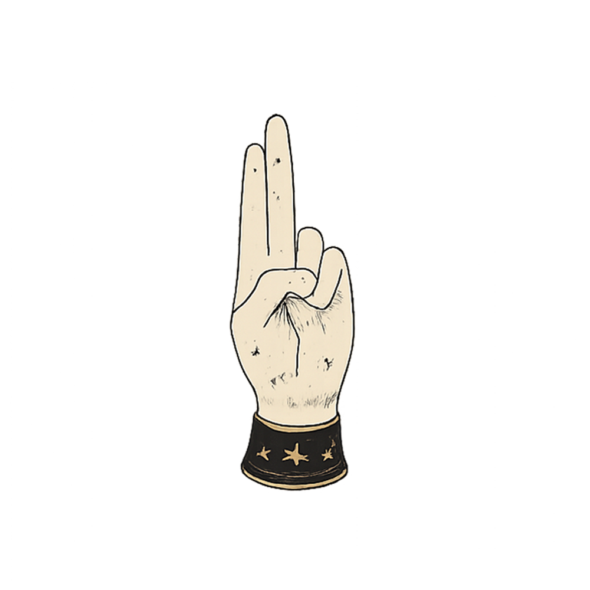
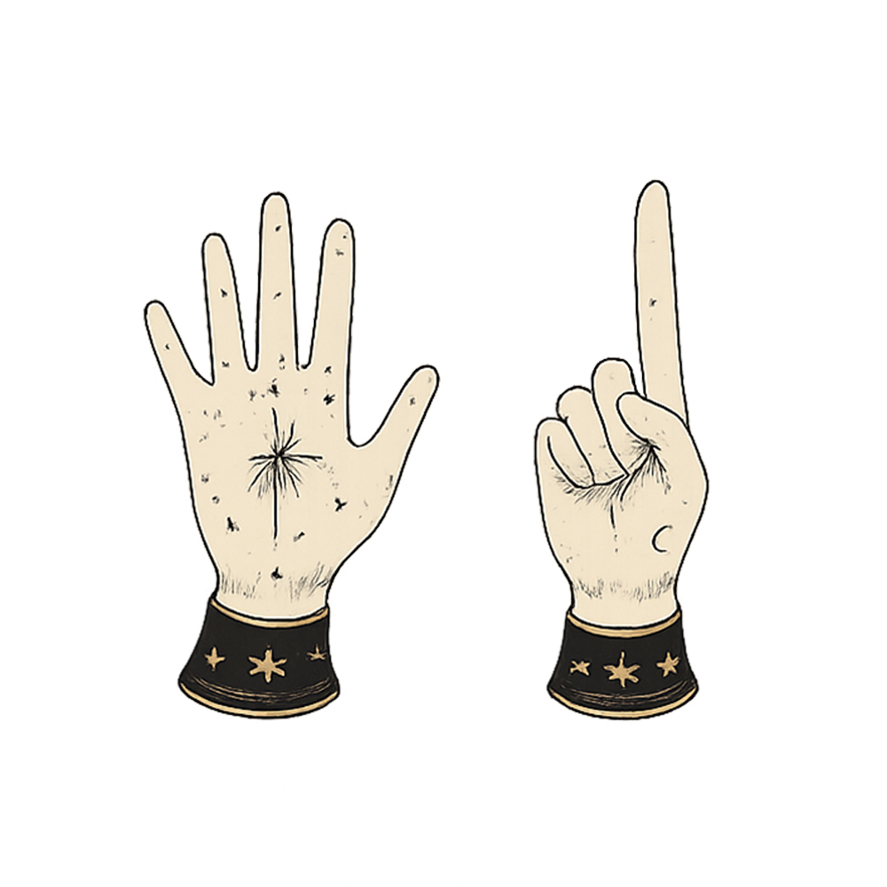
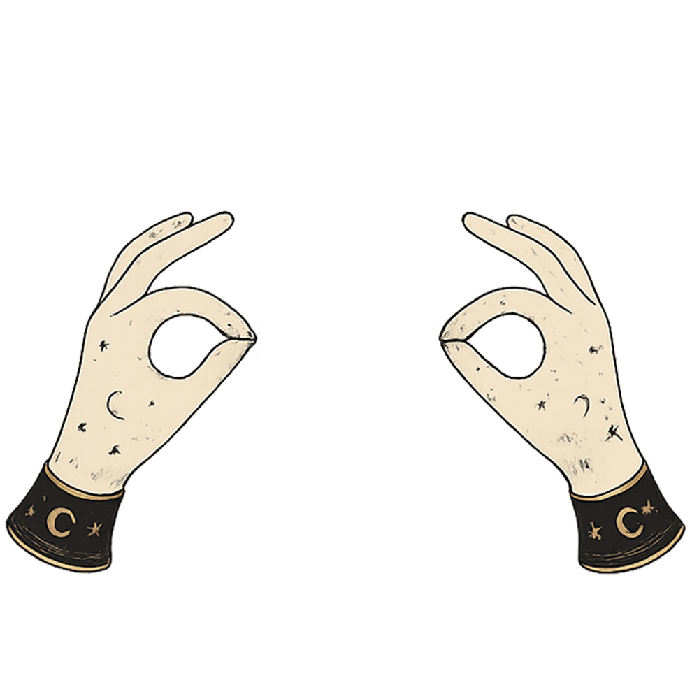
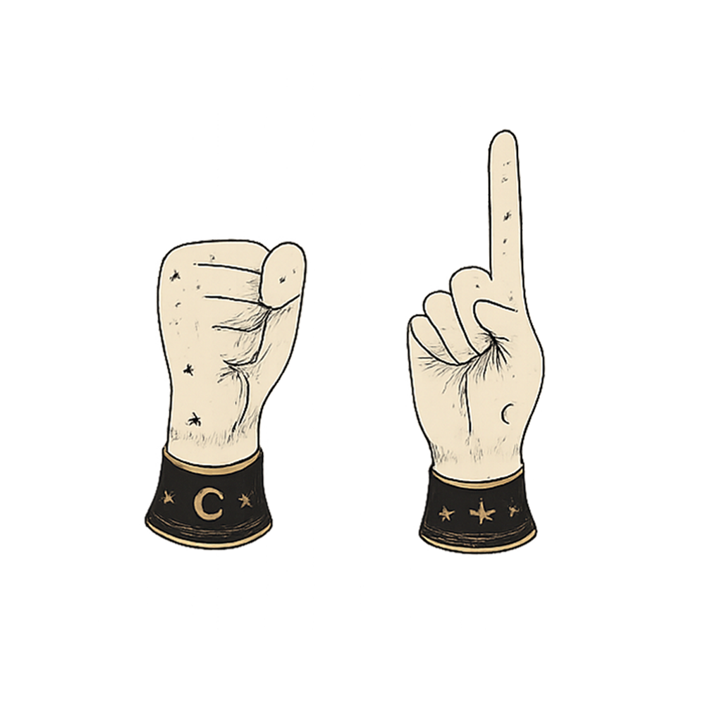

Begin the Summoning Ritual First you will have to summon a constellation. Start by holding up one hand in this position.  Start
Constellation Navigation You have summoned the constellation oracle. Seek your answers by exploring and navigating through the constellation and select your destiny. Rotate  Zoom  Pause + Select  Continue